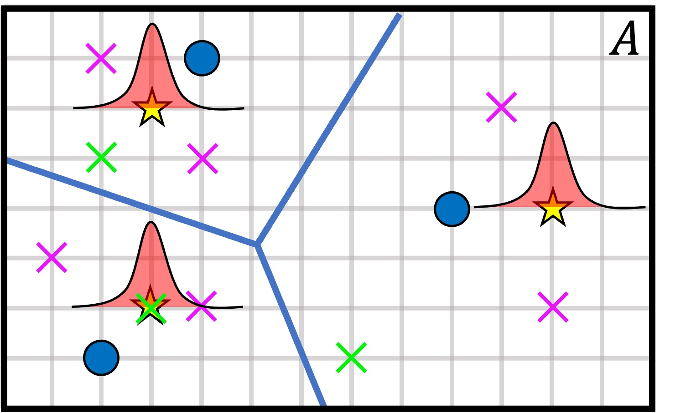
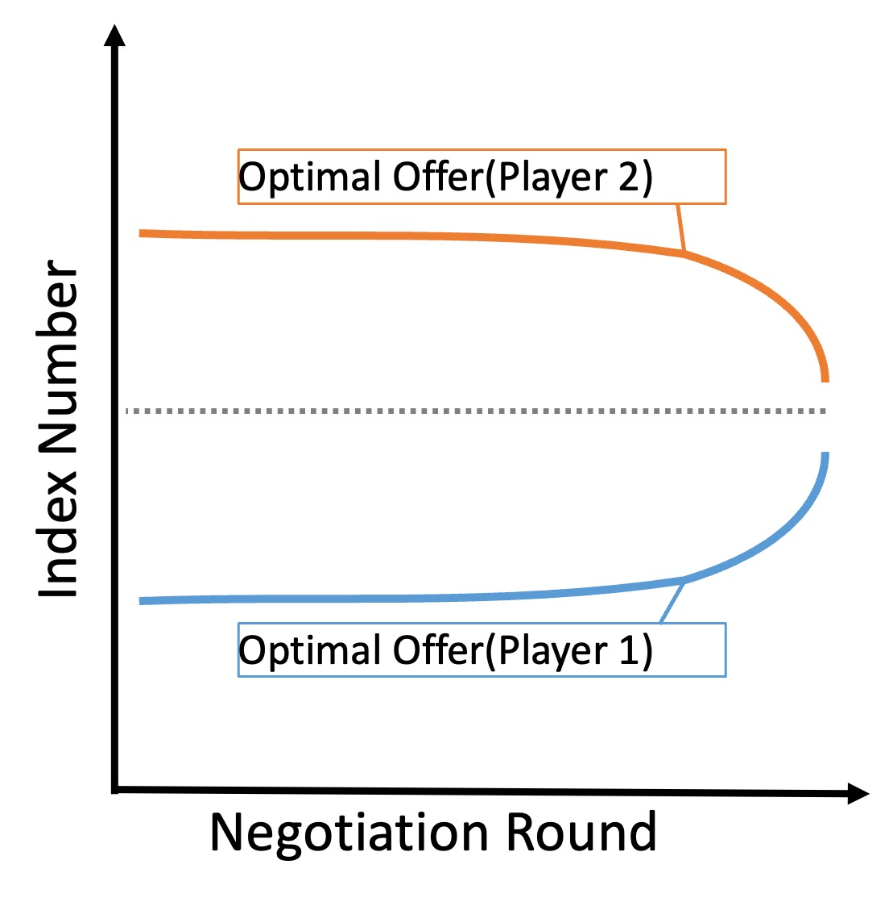

Dissipativity theory is a powerful framework that describes how a dynamical system stores and exchanges energy over time.
The problem of designing of a feedback controller that renders the closed-loop system dissipative is referred to as the feedback dissipativity problem.
In recent years, major efforts have been devoted to the data-driven analysis and control design of dynamical systems.
In this work, we give data-driven LMI conditions for the feedback dissipativity problem of discrete-time LTI systems.
Moreover, we extend such conditions to the case where bounded noise corrupts the system.
We also show how to employ our techniques in the context of decentralized control.
Coverage control aims at controlling multiple agents to a spatially optimal allocation with respect to a density function defined over the coverage area.
When the density function is unknown, agents must learn the environment as well as move to a good configuration simultaneously, and this problem has been tackled within the framework of learning-based coverage control.
Although most prior works take a two-step approach to deal with this problem by first learning the density function and then use the estimate to cover the area, we approach this problem from a different angle: we aim at directly learning the optimal configuration by skipping the estimation of the density function, which we call data-driven coverage control.
We propose two methods, namely the sampled-based method and the Bayesian optimization method.
It is shown that both methods asymptotically converge to the optimal allocation.
Numerical simulations are conducted to show the effectiveness of both methods.

In this work, we deal with bilateral automatic negotiation and examine its fundamental properties.
First, we model the bilateral negotiation process as a repetitive stochastic process.
Then, under some assumptions, we show that the stubborn negotiation strategy, which is to stubbornly make a selfish proposal at the beginning of the negotiation process and to make a compromising proposal towards the end, is optimal with respect to the expected utility.
We also quantify the stubbornness and discuss the relationship between the stubbornness and the parameters of the utility function.
Numerical simulations are provided to show the validity of the analysis.
